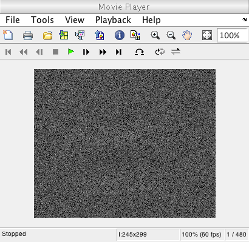

t_eyemovementMovie
This tutorial script will go over how to use the eye movement object with a movie stimuli to get the resulting photoisomerization data in the sensor.
7/15/15 xd wrote it
Contents
Init
ieInit ieSessionSet('wait bar','on');
Load scenes for this tutorial
movieScenes = load('t_eyemovementMovieData.mat'); movieScenes = movieScenes.scene_cell; % Make the scene fov match our desired sensor fov fov = 2; movieScenes = cellfun(@(X) sceneSet(X, 'h fov', fov), movieScenes); movieScenes = num2cell(movieScenes);
Compute the oi for these scenes
oi = oiCreate('human');
movieOi = cellfun(@(X) oiCompute(X, oi), movieScenes);
movieOi = num2cell(movieOi);
Create a sensor object with eye movements
The total time for the eye movements should correspond to the length of the movie. For this tutorial, we will assume that the movie length is 480 ms. We will also multiply the default tremor amplitude by 10 so that the eye movements are a bit clearer to see.
em = emCreate; amp = emGet(em,'tremor amplitude'); em = emSet(em,'tremor amplitude',10*amp); sensor = sensorCreate('human'); sensor = sensorSetSizeToFOV(sensor, fov, movieScenes{1}, movieOi{1}); % The default time interval for eye movements is 1ms, so setting 480 % initial positions is the same as setting the total eye movement time to % 480 ms. sensor = sensorSet(sensor, 'positions', zeros(480, 2)); sensor = sensorSet(sensor, 'eyemove', em); sensor = sensorSet(sensor, 'exp time', 0.001); sensor = sensorSet(sensor, 'time interval', 0.001); sensor = emGenSequence(sensor);
Compute the sensor data
Instead of using the entire position sequence to calculate the data, we will use only the positions corresponding to the current frame in the movie stimulus.
totalPositions = sensorGet(sensor, 'positions'); totalPositionNumber = length(totalPositions); volts = zeros([sensorGet(sensor, 'size') totalPositionNumber]); % For each frame, find the corresponding eye positions and calculate the % sensor data using only those positions. for ii = 1:length(movieOi) theMovieFrame = movieOi{ii}; startIndex = (1 + (ii-1) * totalPositionNumber/length(movieOi)); endIndex = (ii * totalPositionNumber/length(movieOi)); framePositions = totalPositions(startIndex:endIndex, :); sensorTemp = sensorSet(sensor, 'positions', framePositions); sensorTemp = coneAbsorptions(sensorTemp, theMovieFrame); volts(:,:,startIndex:endIndex) = sensorGet(sensorTemp, 'volts'); end sensor = sensorSet(sensor, 'volts', volts); % View the final volt data implay(volts/max(volts(:)), 60);